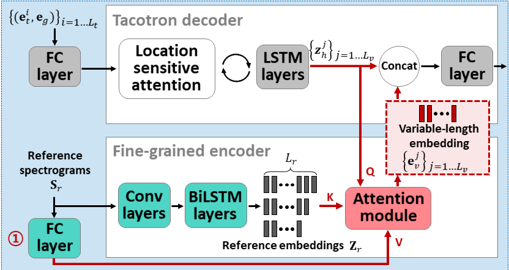
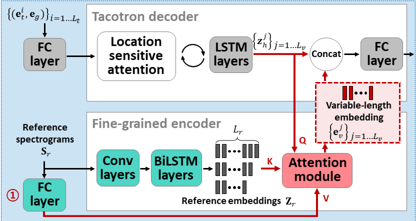

Attentron: Few-shot Text-to-Speech Exploiting Attention-based Variable Length Embedding
* Equal contributions, listed in alphabetical order. † Corresponding author.
On account of growing demands for personalization, the need for a so-called few-shot TTS system that clones speakers with only a few data is emerging. To address this issue, we propose Attentron, a few-shot TTS model that clones voices of speakers unseen during training. It introduces two special encoders, each serving different purposes. A fine-grained encoder extracts variable-length style information via an attention mechanism, and a coarse-grained encoder greatly stabilizes the speech synthesis, circumventing unintelligible gibberish even for synthesizing speech of unseen speakers. In addition, the model can scale out to an arbitrary number of reference audios to improve the quality of the synthesized speech. According to our experiments, including a human evaluation, the proposed model significantly outperforms state-of-the-art models when generating speech for unseen speakers in terms of speaker similarity and quality.
These examples are sampled from the evaluation set for Table 1 in the paper. Each column corresponds to a single speaker, and each row corresponds to different models. Our proposed model at last row, Attentron(8-8), showed the best result from evalutation including MOS in terms of the speaker similarity and speech quality.
| VCTK p304 | VCTK p311 | VCTK p316 | VCTK p305 | VCTK p306 | VCTK p312 | |
|---|---|---|---|---|---|---|
| Text | It's totally double standards. | His third goal was superb. | He declined to give further details. | We had a reunion last week. | You'd think there was a match on today. | I think it must be the uniforms. |
| Ground-truth | ||||||
| LDE(1) | ||||||
| LDE(8) | ||||||
| GMVAE(1) | ||||||
| GMVAE(8) | ||||||
| Attentron(1-1) | ||||||
| Attentron(8-8) |
 

@misc{choi2020attentron,
title={Attentron: Few-Shot Text-to-Speech Utilizing Attention-Based Variable-Length Embedding},
author={Seungwoo Choi and Seungju Han and Dongyoung Kim and Sungjoo Ha},
year={2020},
eprint={2005.08484},
archivePrefix={arXiv},
primaryClass={eess.AS}
}